折れ線グラフと等高線図を組み合わせる
Combine-Line-Contour
サマリー
このチュートリアルは、折れ線グラフと等高線図を組み合わせることで、世界地図を作成する方法を説明します。
- 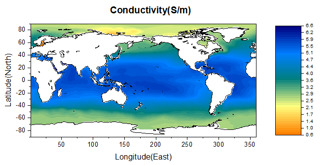
学習する項目
- 等高線図を作成する
- 1つのグラフレイヤで折れ線グラフと等高線図を組み合わせる
- 等高線図を編集する
ステップ
このチュートリアルは、チュートリアルデータプロジェクト（<Origin EXE フォルダ>\Samples\TutorialData.opj）と関連しています。
- TutorialData.opj を開き、プロジェクトエクスプローラ（PE）でMap Combining Line and Contour Plotsを選択します。
- 行列 MBook1Aをアクティブにし、行列全体を選択します。作図：等高線図：カラーマップ等高線を選び、等高線グラフを作成します。
- 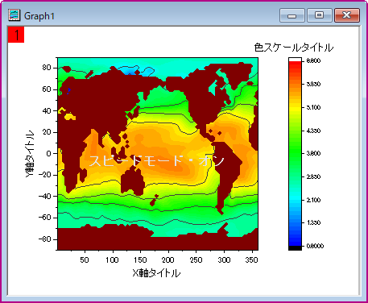
- このステップで、等高線グラフに折れ線グラフを追加します。グラフ操作：レイヤ内容を選択して、ダイアログを開きます。ダイアログの右上にある使用可能なデータドロップダウンリストからフォルダ中のワークシートを選択します。Book5Aの列B(Y)を選択し、作図タイプから折れ線を選択して右側パネルに追加します。そして、OKボタンをクリックします。追加されたプロットの凡例を削除します。
- 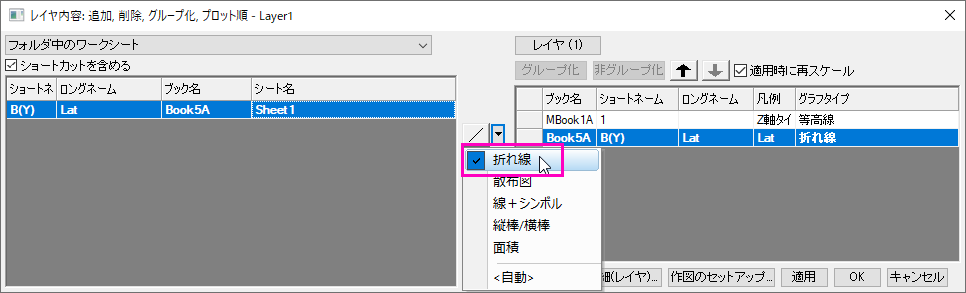
- ワークシートデータを折れ線グラフとして等高線グラフにドラッグアンドドロップできます。
- 次のステップでは、グラフを編集します。メインメニューのフォーマット：レイヤを選択し、作図の詳細ダイアログを開きます。レイヤ表示方法・描画スピードタブを選択し、スピードモード(必要に応じてポイントスキップ)グループにある2つのチェックボックスを外します。レイヤの大きさタブを開き、軸の長さをリンクするX:Yの比率にチェックを付け、値を1 に保持して幅を80 に設定します。
- 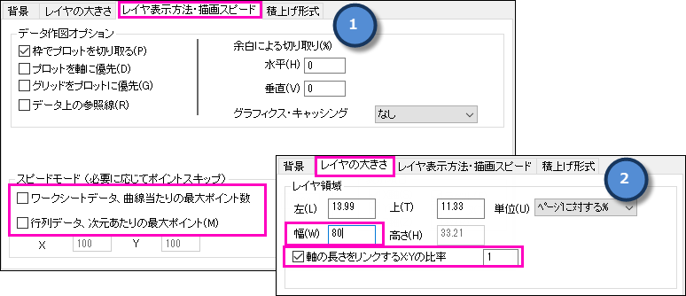
- 作図の詳細ダイアログの左パネルでLayer1を拡張し、等高線図データを選択します。そして、次のように行います。
- カラーマップ/等高線タブで、レベルヘッダをクリックして、レベルの設定ダイアログを開きます。下図のようにダイアログのオプションを設定します。
- 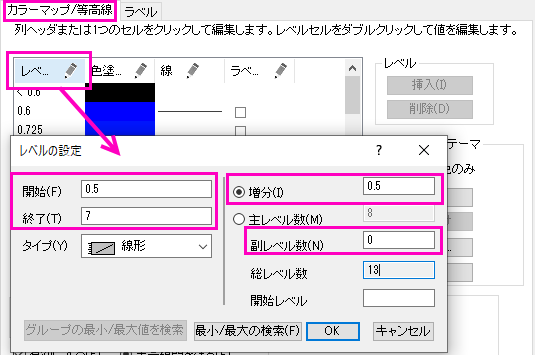
- OKボタンをクリックして、ダイアログを閉じます。色塗りヘッダをクリックし、塗り方ダイアログを開き、他の色を導入して混合ラジオボタンを選択します。そして、最小値 をオレンジ色 、最大値をネイビーにします。
- OKボタンをクリックして、ダイアログを閉じます。色塗りフィールドのセルをクリックして、<0.5 の行の色を赤にします。
- 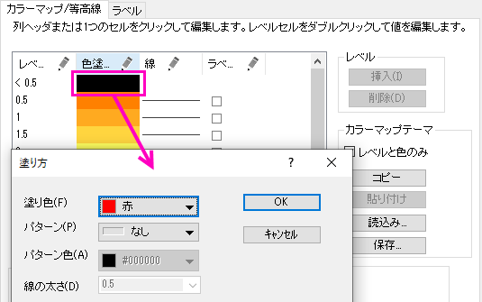
- OKボタンをクリックして、ダイアログを閉じます。色塗りフィールドのセルをクリックして、>7 の行の色を黒にします。
- OKボタンをクリックして、ダイアログを閉じます。線ヘッダをクリックして等高線ダイアログを開き、主レベル上のみ表示のチェックを外します。そして、全て隠すのラジオボタンをクリックします。
- OKボタンをクリックして、ダイアログを閉じます。欠損値グループの 色 の枠をクリックし、塗り色を白にします。OK ボタンをクリックします。
- 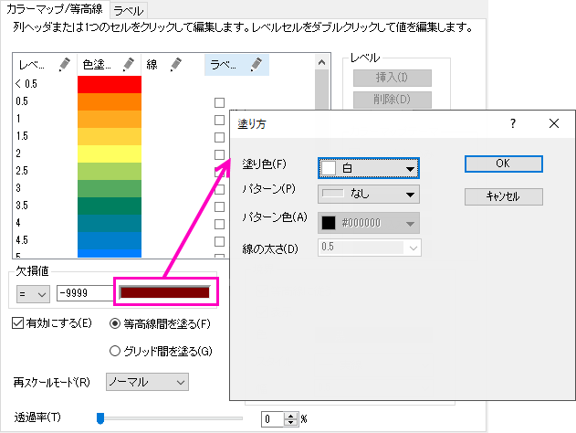
- ラベルタブを開き、小数点桁数のラジオボタンをクリックして、デフォルトの値1のままにします。
- 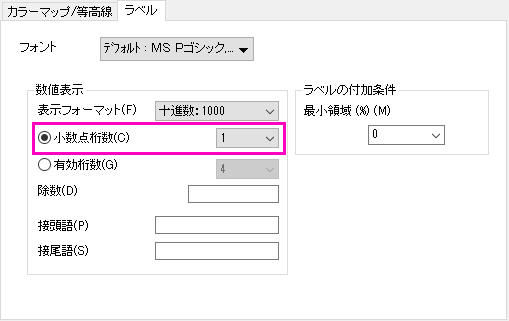
- OKボタンをクリックしてこのダイアログを閉じます。グラフ操作: レイヤにページサイズを合わせるメニューを選択して、ページをレイヤ群のサイズに合わせるダイアログを開きます。デフォルトのまま、OKボタンをクリックします。グラフは次のようになります。
- 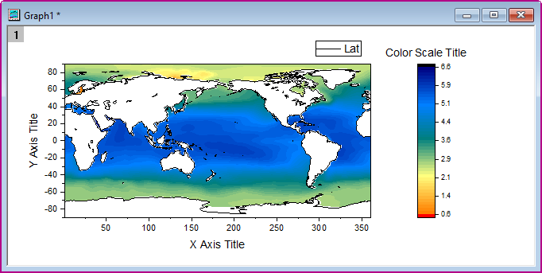
- 色スケールをダブルクリックし、色スケール制御ダイアログのレイアウトページで、次の図が示すように設定します。
- 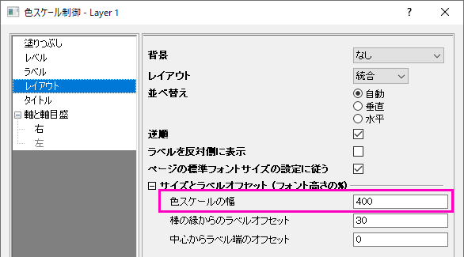
- レベルページをを開き、以下のように設定します。
- 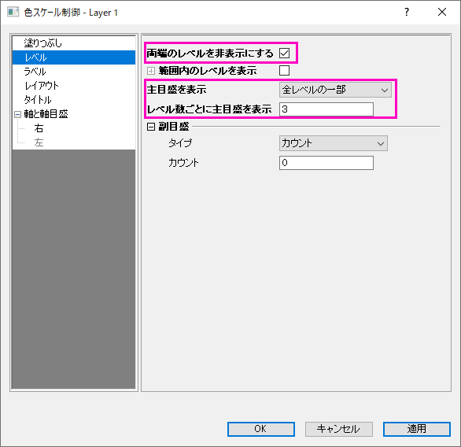
- カラースケールのサイズ変更と再配置を行います。そして、XとY軸の目盛ラベルを修正し、サンプルグラフが示すようにグラフタイトルを追加します。グラフは次のようになります。